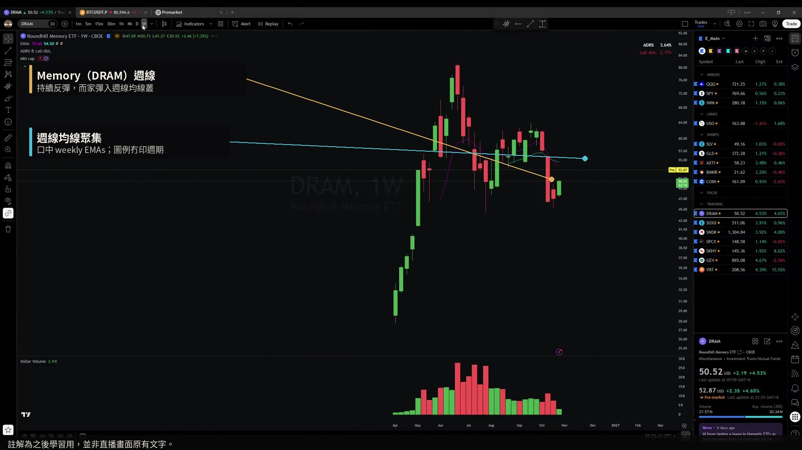
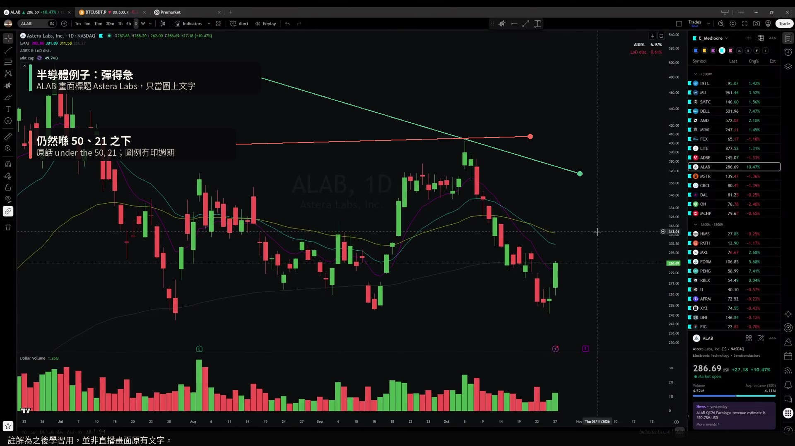
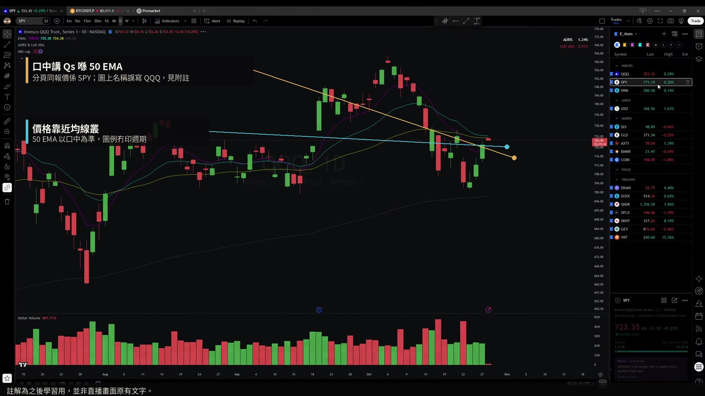

概要
板塊有彈，但仍要睇均線位置
08:39 起，佢話 memory 名稱繼續向上行，而家彈入週線均線。半導體都有一啲彈得急，但仍喺 50、21 之下。跟住講 Qs 而家喺 50 EMA。
講 Qs 嗰陣，分頁同右側報價係 SPY，圖上卻寫住 Invesco QQQ Trust。本站以分頁同報價當作 SPY，並把名稱錯配標出。ALAB 畫面標題 Astera Labs 只當圖上文字。圖例冇印均線週期。
圖一
Memory 週線：彈入均線聚集
直播 08:40

原話
And memory names continues rallying higher. And now it's actually bouncing into the weekly EMAs.
而且 memory 名稱繼續向上行。而家其實係彈入週線均線。
點樣讀
重點係位置：唔係只講「升咗」，而係彈入週線均線聚集。
畫面係 Roundhill Memory ETF（DRAM）。圖例冇印週期。
圖二
半導體例子：彈得急，仍在 50、21 之下
直播 09:00

原話
SEMI as well, although some of the SEMI names are bouncing pretty strongly, but I mean they're still staying under the 50, 21.
半導體都係。雖然有啲半導體名稱彈得幾急，但佢哋仍然留在 50、21 之下。
點樣讀
有強彈唔等於板塊已轉強：要睇仲喺唔喺下降均線之下。
呢幅用 ALAB 做例子。畫面標題 Astera Labs, Inc. 只當圖上文字。
圖三
口中講 Qs 在 50 EMA，畫面卻係 SPY
直播 09:11

原話
Qs is right now at the 50 EMA.
Qs 而家喺 50 EMA。
Whisper 把 Qs 聽成 kills。YouTube 寫 Q's。當時分頁同右側報價係 SPY，圖上正式名稱卻寫 Invesco QQQ Trust。本站按分頁同報價當作 SPY，並標出名稱錯配。
點樣讀
原話係指數位置：喺 50 EMA。邊隻指數以畫面為準，唔好只跟口誤或者錯寫嘅名稱。
圖例冇印 50 嘅週期。右側同時列出 QQQ 同 SPY，兩者報價唔同。
附註
注意事項
- Qs／SPY／圖上 QQQ 名稱三者不一致，係呢科最重要嘅字幕同畫面分歧。
- 圖例冇印均線週期；50、21 以口中講法為準。